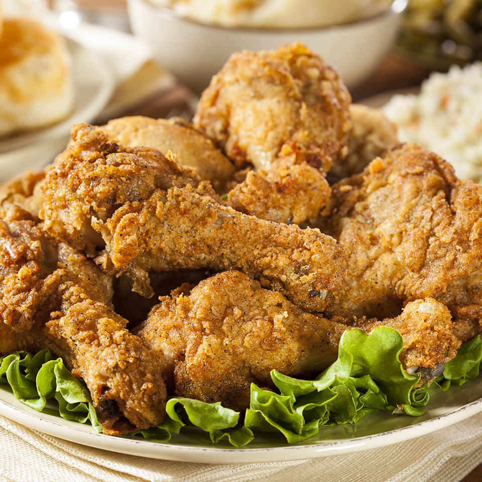

Chicken recipe

Description
This is better than KFC or any other chicken place youve ever been.
Ingredients
30 saltine crackers
2 tablespoons all-purpose flour
2 tablespoons dry potato flakes
1 teaspoon seasoned salt
1/2 teaspoon ground black pepper
1 egg
6 skinless, boneless chicken breast halves
2 cups vegtable oil for frying
Steps to Prepare
- Place crackers in a large resealable plastic bag; seal bag and crush crackers with a rolling pin until they are coarse crumbs. Add the flour, potato flakes, seasoned salt, and pepper and mix well.
- Beat egg in a shallow dish or bowl. One by one, dredge chicken pieces in egg, then place in bag with crumb mixture. Seal bag and shake to coat.
- Heat oil in a deep-fryer or large saucepan to 350 degrees F (175 degrees C).
- Fry chicken, turning frequently, until golden brown and juices run clear, 15 to 20 minutes.
Thats how you make better than KFC Chicken